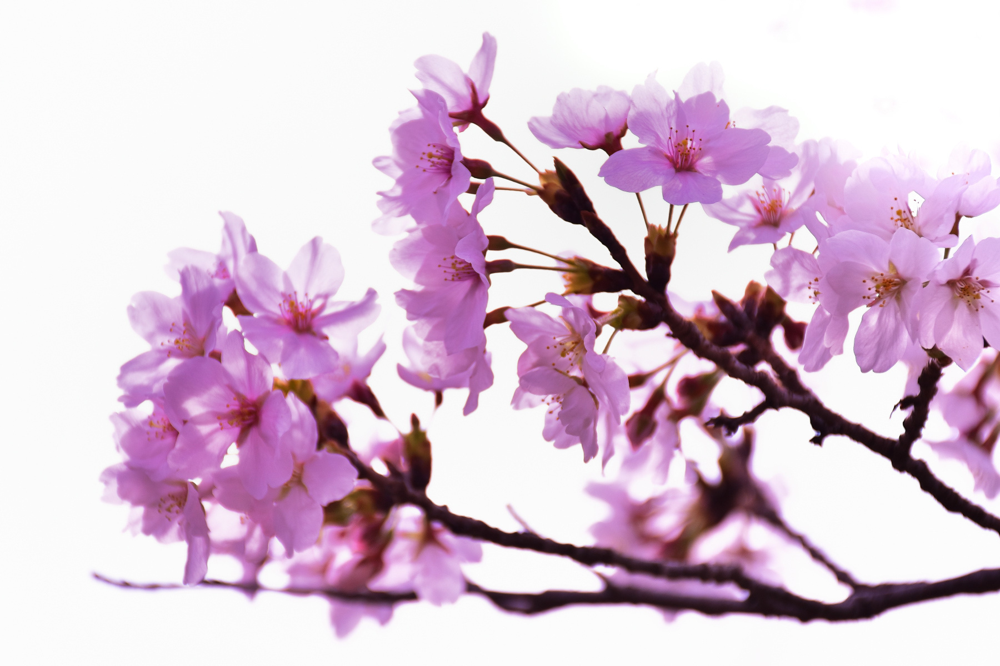
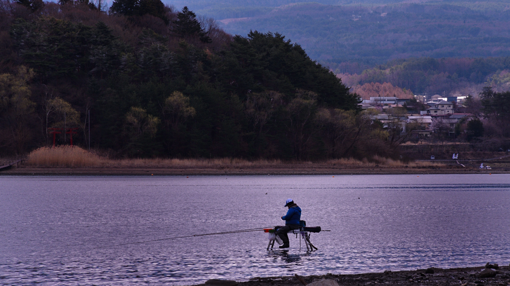
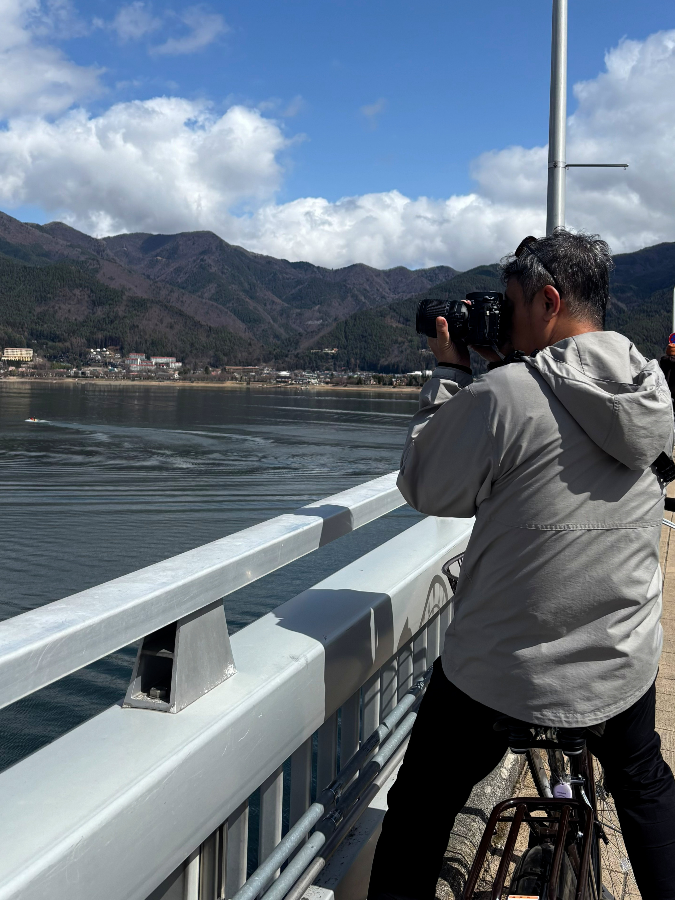

Whispers of Sakura
A quiet interpretation of spring, through light, atmosphere, and color.
Behind the Frame →
Timeless photographs inspired by nature, atmosphere, and quiet moments.
Explore Gallery
A quiet interpretation of spring, through light, atmosphere, and color.
Behind the Frame →
Photography, is not merely about recording what is seen, but about expressing emotion, atmosphere, and the quiet beauty hidden within ordinary moments. Every photograph is carefully crafted through light, color, composition, and patience to create timeless fine art imagery.
Through nar4frame, I present collections inspired by nature, travel, and everyday scenes, transformed into visual stories that invite viewers to slow down and appreciate the details often overlooked.
Learn About the Artist